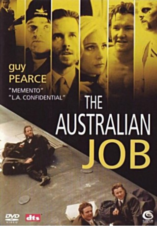
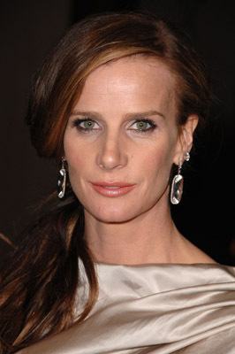
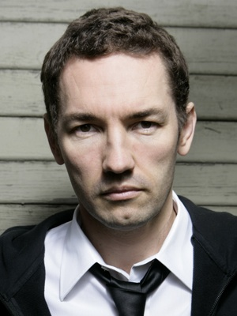

#3490 The Australian Job
 
 IMDB-Wertung: 6.0 / 10
IMDB-Wertung: 6.0 / 10  Metascore: 0
Metascore: 0 
Die Gangster Dale, Frank und Shane haben das beste Alibi der Welt: Sie sitzen im Knast. Doch mit Hilfe der korrupten Anstaltsleitung können sie inoffizielle Ausgänge nutzen, um perfekt ausgeklügelte Raubzüge abzuziehen, die von Dales Anwalt Frank organisiert werden. Als Frank eine Affäre mit Dales Frau beginnt und er die drei zusätzlich abziehen und um ihre endgültige Freiheit bringen möchte, überschlagen sich die Ereignisse.
Jahr: 2002
Dauer: 102 Minuten
FSK: 16
Land: Australien Studio: Sunfilm EntertainmentTonspuren: DTS - ,
Untertitel: Deutsch,
Auflösung: 1080p (1920x848) Größe: 4136 MB
Genre: Action, Thriller, Drama, Komödie, Krimi
Regisseur: Scott Roberts
Drehbuch: Nacho Vigalondo
Soundtrack:
Darsteller:
 Guy Pearce als Dale Twentyman
Guy Pearce als Dale Twentyman-  Rachel Griffiths als Carol Twentyman
 Robert Taylor als Frank Malone
Robert Taylor als Frank Malone Joel Edgerton als Shane Twentyman
Joel Edgerton als Shane Twentyman- Damien Richardson als Mal Twentyman
- Kate Atkinson als Pamela
 Vince Colosimo als Det. Mike Kelly
Vince Colosimo als Det. Mike Kelly- Don Bridges als Doug
- Doug Bowles als Bill
- Jasper Bagg als Prisoner In Visiting Room
- Louise Crawford als Waitress #1
- Michelle Avery als Waitress #2
-  Nash Edgerton als Bank Guard
- Albany Asher als Bikini Girl at Bondi Beach , uncredited
- Monty Burgess als Prisoner , uncredited
- David No als Basketballer , uncredited
- Rhondda Findleton als Jane Moore
- Paul Sonkkila als Det. Jack O'Riordan
- Kim Gyngell als Paul
- Dorian Nkono als Tarzan
- Stephen Whittaker als Rawson
- Torquil Neilson als Mick
- Greg Fleet als Tony
- Ross Daniels als Dave
- Peter Regan als Governor
- Roger Neave als Doctor
- Jason Gilchrist als Weightlifter
- Niniane Le Page als Prisoner's Wife
- Beth Buchanan als Nurse
- Frank Kennedy als Sick Prisoner
- Tony Jones als Newsreader
- Kerry Cole als Norbert
- Colwyn Roberts als Bookie
- Georgie Bax als Sheryl
- Leanne McCulloch als Massage Woman
- Aris Gounaris als Hotel Security Guard #1
- James Shaw als Hotel Security Guard #2
- James Charters als Hotel Security Guard #3
- Gary Rens als Security Guard #1
- Wasim Sabra als Security Guard #2
- Phil Pollard als Security Guard #3
- Tahu Marumaru als Security Guard #4
- Marc Calderazzo als Prison Guard
- Noel Ballantine als Bookie , uncredited
- Scottie Cameron als Skateboarder , uncredited
- Jordan Janceski als Race-Goer , uncredited
- David Newell als Security Guard , uncredited
Datei: X:\2002\Australian Job, The (2002, FSK16, 1920x848).mkv seit 14.04.2016
Festplatte: HD 1996-2002
 Es gibt insgesamt 93 Filme in der Gruppe '2002'
Es gibt insgesamt 93 Filme in der Gruppe '2002'